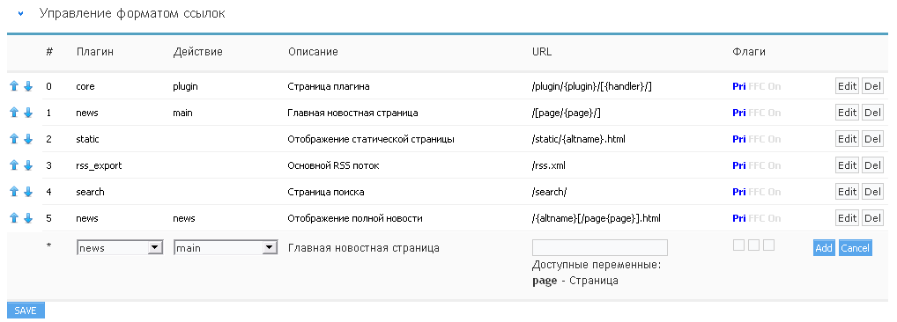

Управление форматом ссылок
Next Generation CMS позволяет гибко настроить формат URL для определённых групп тиопвых страниц.
Система предусматривает специальные флаги, которые регулируют вопросы отображения определённого контента при генерации ссылок. (рис 10.1).

рис 10.1
Используемые флаги
Pri (Primary action) - указывает, что по этой строке двиг будет генерировать ссылку
Данный флаг используется в случае, когда надо сохранить старые ссылки или по какой-то другой причине одна страница должна адресоваться с разных URL'ов.
(для одного плагина:действия может быть несколько строк в настройках ЧПУ, но только одну из строк двиг использует для генерации ссылок - ту, которая отмечена флагом Pri).
Остальные строки с тем же плагином:действием будут расцениваться просто как альтернативные ссылки по которым можно обращаться.
FFC (Flag: Fail Continue) - специальный флаг, который позволяет одну и ту же ссылку назначать разным действиям.
Основное условие - действие должно поддерживать этот флаг (сейчас его поддерживают только новости и статические страницы).
Без флага в новостях/статиках идёт поиск статьи (в соответствии с URL'ом), если статья не найдена - возвращается ошибка "статья не найдена".
Если флаг включен и статья не находится, то управление возвращается обратно в парсер ЧПУ и он начинает искать совпадения со следующей строки.
On (Off) - активна ли данная запись (вместо удаления можно просто деактивировать).
Формат - символы "[" и "]" используются для пометки условного (необязательного) блока, может быть только один в URL'е.
Используется для работы с переменными, которые не всегда активны (к примеру постраничка - страница #1 не отображается).
Всё остальное - как напишешь используя имеющиеся в наличии переменные (отображаются при редактировании).
Основной момент о котором многие не думают: новая система ЧПУ - очень простая система.
Работает по принципу: взяли первую строчку, проверили подходит ли она под регулярное выражение (формируемое из указанной в настройках ссылки).
Если подходит - передаём управление соответствующему плагину. если не подходит - берём следующую строчку и так до конца таблицы.
Если в конце таблицы так ни одного соответствия и не нашли, то выводим ошибку "страница не найдена".
И всё. Ничего другого движок ЧПУ не умел, не умеет,... да и не надо ему в принципе ничего другого уметь.
Поэтому крайне важно соблюдать правильный порядок следования строк в таблице ЧПУ.